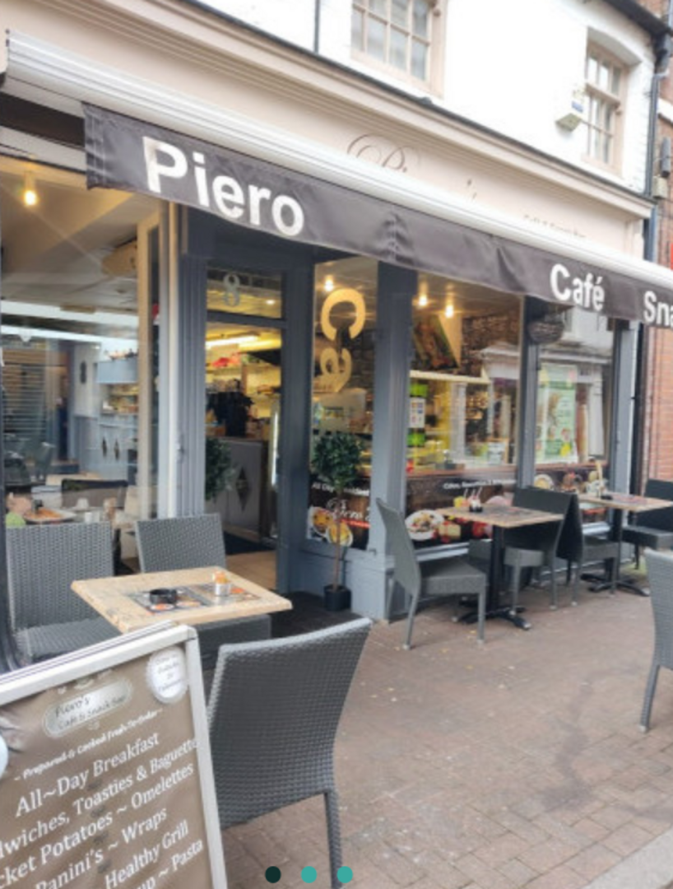

Full Breakfast
£9.90Sausages, egg, turkey rashers, beans, mushrooms, tomato, toast and hash browns.
Breakfast · delivery reference
Call the café8 Loseby Lane · Leicester
A full breakfast. A lunch catch-up. A coffee on Loseby Lane.
Piero Snack Bar
Breakfast · Lunch · Coffee
A catch-up over lunch?
Choosing a café for a few people? Prepare a short outline before you call Piero’s.
The café needs to confirm whether it can accommodate your group, along with timings and food options. This tool prepares questions for your call.
Local demo · nothing is sent or booked
Your call outline
Ask the café to confirm space, timings, menu and prices. This is a draft for your conversation.
Call 0116 251 5322 ↗Number published by Visit Leicester. No booking has been made.
Make it a Loseby Lane stop
Use the grey Piero awning as your landmark. Call ahead to check current opening times and anything you need to know about your visit.
Open the address in Maps ↗Use Piero’s existing Deliveroo listing for current delivery choices, availability and checkout.
Continue to Deliveroo ↗Published on Visit Leicester’s café listing. Current hours and café prices need direct confirmation.
Your next café stop
A proposed email sign-up for Piero’s café updates.